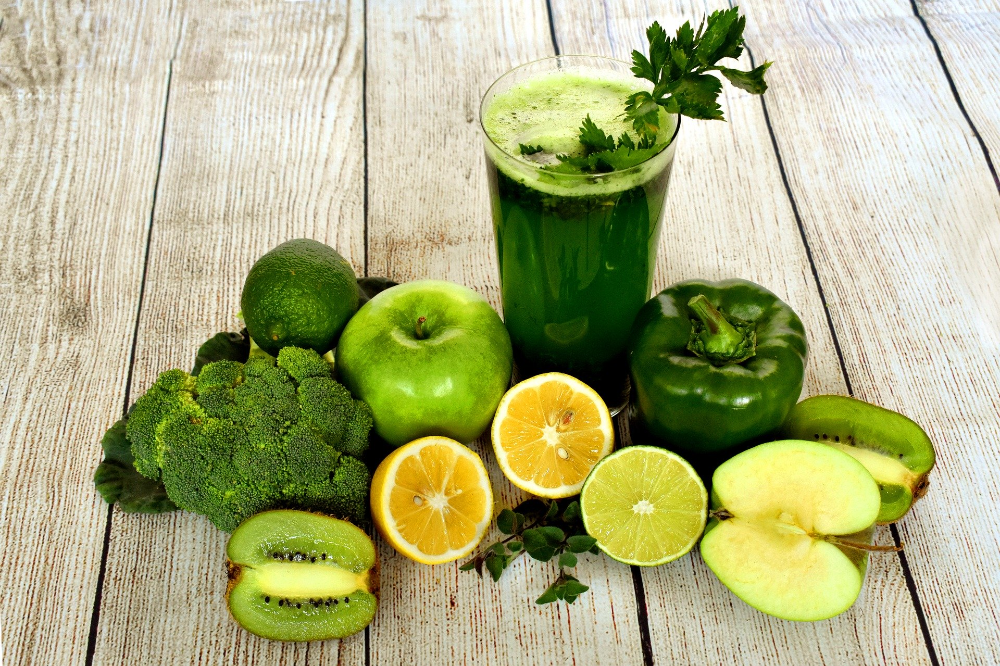

Detoxification mainly is the physiological or medicinal removal of toxic substances from a living organism, including the human body, which is mainly carried out by the liver. Though it is the main function of our liver to detoxify our body nevertheless we can also act as an outside source and by following various methods can detoxify our body in an efficient manner. Here we present to you our list of 7 ways that should help you detoxify yourself even by staying at home.
While you detoxify your body you should make it sure that you are also in the meantime supplying your body with all the essential nutrients that it needs and wasn’t receiving before.
Through time various studies have shown that whole foods varying from cruciferous vegetables, berries, garlic, and spices like turmeric can prove beneficial to your body to detoxify through various pathways. You should try and create an optimal food plan for your body to detoxify it and also lose weight. Your food plan must essentially contain protein and quality fat. If possible you should also go for organic plant foods and the highest-quality animal foods. You might wish to take supplements as a source of nutrients that your body may not be receiving through your normal food intake.
Through time and time regular exercise has proven itself to be one of the best ways to detoxify your body. Regular exercise always helps you feel activated and rejuvenated and also removes the laziness that surrounds you after you have a fat-rich meal. To reap the most benefits out of exercise one should always try balanced cardio and strength training as it provides you with an all-round approach to exercise. The main aim of exercise is to make sure that you and your body are moving daily even though it maybe for a small amount of time. Exercise also helps in improving blood circulation be acts as a catalyst in providing oxygen and required nutrients to all our organs and tissues. It helps the body in a better way to excrete toxin which is the main purpose of detoxification and burn fat more effectively. So whatever exercise type might suit you ranging from yoga or high-intensity training or normal jogging, you should choose one and stick to it by making consistent workout plan regarding it.
Getting a good night's rest in a regular manner is one of the best ways to detoxify your body. According to the various studies, it has been shown that sleep has been connected to weight loss, reduced cortisol levels and stress, and has significant effects in improving an individual's overall health. A good, proper and sound sleep gives your body the time and space that it requires to rest itself and to get rid of the various toxins present in it.
Also, neurobiologists and scientists believe that sleep induces a brain detoxification process called the glymphatic system and insufficient sleep impairs your glymphatic system which later on causes toxin build-up. Hence without quality sleep, you cannot even imagine to detoxify yourself effectively.
Regular hydration of the body helps us in keeping our cellular machinery at its peak performance and we are able to detoxify our body optimally. It also has various numerous other functions and benefits.
Drinking healthy fluids are the key to make one feel better quickly especially after an indulgent few days as these help us remove all the harmful toxins from our body. There are various nutritionist-approved drinks that are beneficial for the body but priority should be given to the various herbal teas, mineral broths, and obviously good old water.
You should always try and aim for properly filtered water to avoid all the added toxins which are harmful to the body and also do remember to always drink water after waking up and right before you go to sleep because the time you spend in sleeping is the time your body remains dehydrated. So by providing this hydration at the time of waking up you are ought to feel refreshed and your cells would be energized. Adding on to all these benefits being hydrated even helps us to maintain our sugar level.

When your body feels gross, and you would feel not quite right and also would have a need to detoxify then its sure that your first reaction would be to leave everything and live on just green juice and water. Initially this may sound good and attractive to you but you cannot be more mistaken than this. This type of thinking generally is a mistake. You should not rely on one single food or drink always because excess of anything is harmful. You should make a plan, a balanced diet plan which consists of nutritious foods but also some percent of it consists of food that your body craves for. It may be designed in a 80-20 percent ratio. Don't stress yourself if you sometimes desire to deviate from your diet and something you love because as long as your choices and your cravings are mindful, your detox will still work.
A quick stretch break has been proved to be probably one of the most enjoyable ways to detox your body. You should always try and take a break once an hour or two, even if its only for five minutes. Use this time to stretch and move around. This will help you decrease your fatigue and gets your blood flowing through the muscles.
It may sound obvious to you that alcohol should be avoided while you detoxify yourself but sadly there are still people who tend to intake alcohol even in small amounts while they detoxify themselves. Alcohol acts as a toxin to our bodies, which means when we ingest it, our bodies will work to metabolize the alcohol before other sources of energy which will result into the storage of the other calories in your food or drink will as fat which nullifies the process of detoxification.
Wanna reach out to us?